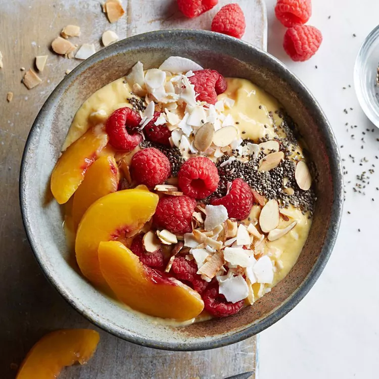

During the summer months, when it’s too hot for warm oatmeal, overnight oats are the perfect
way to satisfy your oatmeal craving! You still get to chow down on a bowl of oats, but they’re
cool and refreshing.
Ingredients:
2 c. old fashioned oats
3 c. milk of your choice (we’re using almond)
2 tsp. cinnamon
2 scoops vanilla protein powder
Fresh berries
Nut butters
Optional add-ins -
Fresh berries
Nut butters
Sliced banana
Sprinkle of cinnamon
Dash of vanilla extract
Chia seeds
Pineapple chunks
Directions:
Combine ingredients in a bowl, then divide into four jars or other containers with a lid.
Add lids, then place jars in the refrigerator overnight; enjoy in the morning!
Raspberry-Peach-Mango Smoothie Bowl
Start your day with a smile!
This healthy smoothie recipe is a gateway to the smoothie-bowl craze. Use whatever fruit,
nuts and seeds you like best to make it your own. Be sure to use frozen fruit in Step 1
to yield a creamy, frosty base for the toppings.
Ingredients:
1 cup frozen mango chunks
¾ cup nonfat plain Greek yogurt
¼ cup reduced-fat milk
1 teaspoon vanilla extract
¼ ripe peach, sliced
⅓ cup raspberries
1 tablespoon sliced almonds, toasted if desired
1 tablespoon unsweetened coconut flakes, toasted if desired
1 teaspoon chia seeds
Directions:
Combine mango, yogurt, milk and vanilla in a blender. Puree until smooth.
Pour the smoothie into a bowl and top with peach slices, raspberries, almonds, coconut and chia seeds to taste.

Air-Fryer French Toast Sticks
Start your day with a smile!
These easy-to-make French toast sticks turn out great in an air fryer.
Dry your bread out first so you don't end up having your bread fall apart
during the soaking process. Serve with your favorite French toast toppings,
such as powdered sugar, a sugar and cinnamon mix, or syrup.
Ingredients:
4 large eggs
¾ cup whole milk
2 tablespoons granulated sugar
1 teaspoon vanilla extract
8 slices whole-wheat sandwich bread
Cooking spray
Directions:
Whisk eggs, milk, sugar and vanilla together in a wide shallow dish. Cut bread slices into thirds lengthwise (24 pieces total).
Preheat air fryer to 325°F for 3 minutes. Lightly coat the basket with cooking spray. Working in batches, dip 8 bread sticks in the egg mixture, flipping constantly, until completely soaked, about 15 seconds.
Arrange the soaked bread sticks in an even layer in the prepared basket; coat with cooking spray. Cook, flipping and coating with additional cooking spray halfway, until golden brown and interior is no longer wet, about 10 minutes.
Transfer to a platter and cover with foil to keep warm. Repeat the process 2 more times with the remaining bread sticks and egg mixture.
Acai Bowl
Start your day with a smile!
Acai bowls are essentially a base of pureed or blended acai berries,
usually mixed with other fruits to achieve the desired texture, and topped with
your choice of more fruits and grains. They are certainly a visual and flavour
upgrade from bland bowls of oatmeal and arguably a healthier breakfast choice than,
say, kaya toast or roti prata.
¼ cup fat-free plain strained yogurt, such as Greek-style
¼ cup coconut water
1 tablespoon almond butter
⅛ teaspoon ground cinnamon
2 tablespoons dried goji berries
2 tablespoons sliced almonds, toasted
1 teaspoon chia seeds
1 teaspoon hemp seeds
Directions:
Cut banana in half crosswise; peel 1 half (set aside the remaining unpeeled half). Place the peeled banana half on a freezer-safe plate lined with parchment paper; freeze until solid, about 2 hours.
Place the frozen banana, berries, acai puree, yogurt, coconut water, almond butter and cinnamon in a blender. Blend until smooth, 30 to 45 seconds, stopping to scrape down sides of blender as needed. Peel and slice the reserved banana half.
Pour the smoothie into a bowl; top with the banana slices, goji berries, almonds, chia seeds and hemp seeds. Serve immediately.